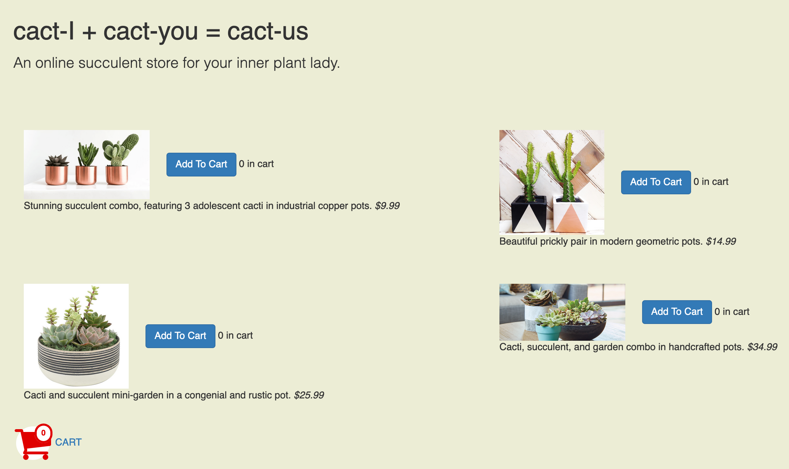
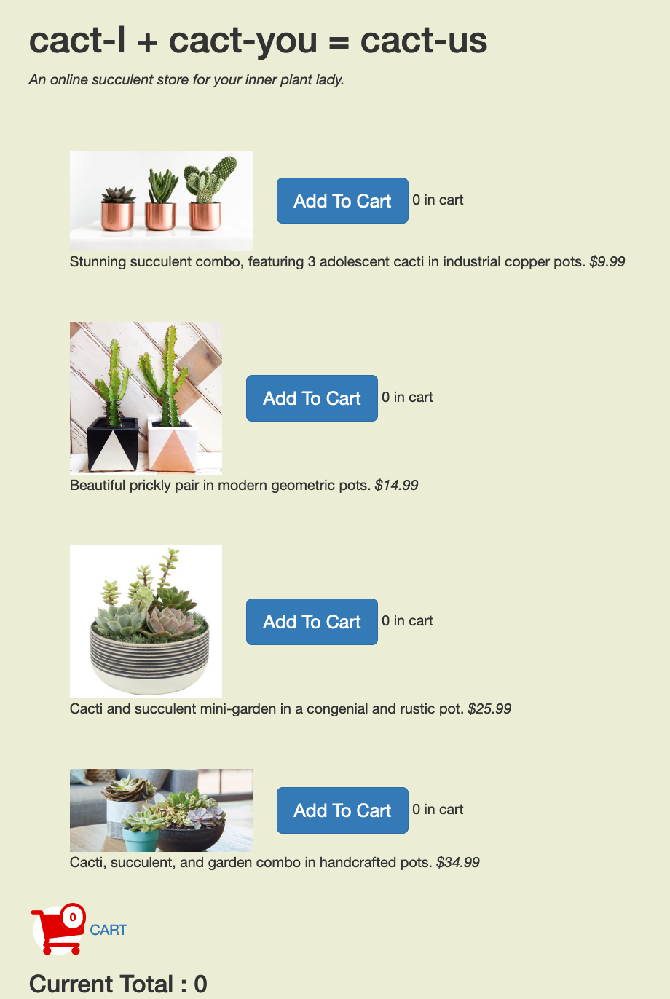
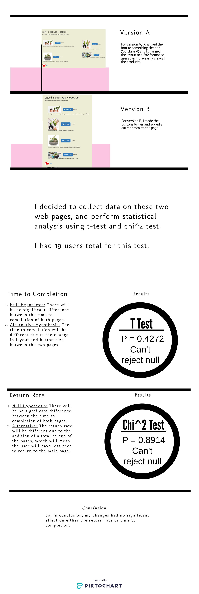

A/B Testing is something used commonly in the real world to test small changes among a group of users. To learn more about A/B testing and how it is used in the real world, I decided to test my changes on a website with regards to Time To Completion and Return Rate. Here is the website I tested: Website
Here is version A of the website 
Here is version B of the website 
I plan to look at two metrics for the changes between my websites: Time to Completion, and Return Rate. Below I will outline the Null and Alternative Hypothesis for these metrics.
This is the data I collected from my website, that I will use statistical analysis on in the next part. I collected this data by first sharing the link with fellow students. Afterwards, to get more data I shared it with friends and family. Heroku logs store the user data in terms of what page is loaded, what button is clicked etc, and using this data I was able to calculate my metrics.
This is the calculation based on the data
